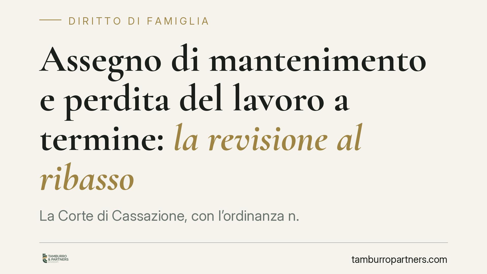

Assegno di mantenimento e perdita del lavoro a termine: la revisione al ribasso
La Corte di Cassazione, con l'ordinanza n. 19793/2026, chiarisce che anche la cessazione di un rapporto di lavoro a tempo determinato può giustificare la riduzione dell'assegno di mantenimento, a condizione che da essa derivi un effettivo peggioramento della capacità economica dell'obbligato. Un pronunciamento che incide sui presupposti della revisione e sull'onere della prova.

Il caso e la decisione
Un ex coniuge chiedeva la riduzione dell'assegno di mantenimento dopo la scadenza di un contratto di lavoro a tempo determinato. La difesa dell'altra parte sosteneva che la perdita, essendo prevedibile fin dall'origine, non potesse valere come "fatto nuovo" idoneo a modificare le condizioni fissate in sede di omologa.
La Cassazione ha respinto questa impostazione. Con l'ordinanza n. 19793/2026 ha affermato che ciò che rileva non è la prevedibilità astratta della scadenza, ma l'effetto concreto sul patrimonio dell'obbligato. Se la cessazione del rapporto produce un reale decremento delle entrate, il presupposto per la revisione sussiste.
Inquadramento normativo
L'assegno di mantenimento non è una misura cristallizzata. L'articolo 156, ultimo comma, del Codice civile prevede che il provvedimento sul mantenimento possa essere modificato "qualora sopravvengano giustificati motivi". La stessa logica di revisione è espressa, per l'assegno divorzile, dall'articolo 9 della legge n. 898/1970.
Il concetto di "giustificato motivo" è stato interpretato dalla giurisprudenza come sopravvenienza di fatti che alterano in modo apprezzabile l'equilibrio economico esistente al momento della fissazione dell'assegno. La novità dell'ordinanza sta nel precisare che la natura a termine del rapporto di lavoro non esclude di per sé la rilevanza della sua cessazione. Conta il risultato patrimoniale, non la sua anticipata conoscibilità.
Il giudice è quindi chiamato a un confronto puntuale: capacità economica all'epoca dell'omologa contro capacità economica attuale. È in questa comparazione concreta — spesso affidata a una consulenza tecnica (CTU) — che si misura l'esistenza del decremento.
Implicazioni pratiche
Per l'obbligato, la pronuncia apre uno spazio di tutela: la fine di un contratto a termine può essere fatta valere, purché si dimostri la riduzione effettiva delle risorse. Non basta allegare la scadenza del rapporto; occorre provare che ne è derivato un peggioramento reale e non temporaneo della situazione reddituale.
Attenzione al rovescio della medaglia. Il giudice valuta anche la capacità lavorativa residua e l'eventuale colpevole inerzia di chi, pur potendo, non cerca una nuova occupazione. Una perdita di lavoro non si traduce automaticamente in riduzione dell'assegno se l'interessato dispone di concrete possibilità di reimpiego e non le attiva.
Per il beneficiario dell'assegno, la decisione impone prudenza: la stabilità dell'importo non è garantita e va monitorata l'evoluzione economica dell'altra parte. In sede di revisione sarà possibile contestare la genuinità del decremento, evidenziando redditi non dichiarati, patrimoni disponibili o una capacità di guadagno non valorizzata.
Resta centrale la documentazione. Il procedimento di revisione vive di prove: buste paga, dichiarazioni dei redditi, estratti contributivi, comunicazioni di cessazione del rapporto. La comparazione tra "prima" e "dopo" regge solo se sostenuta da dati verificabili.
Cosa fare in concreto
- Documentate la cessazione e i suoi effetti. Conservate contratto, lettera di scadenza, ultime buste paga e prova delle nuove entrate (o della loro assenza).
- Ricostruite il quadro all'omologa. Recuperate i redditi dichiarati al momento della fissazione dell'assegno: la revisione si gioca sul confronto tra le due situazioni.
- Dimostrate la ricerca di nuova occupazione. Candidature, iscrizioni ai centri per l'impiego e comunicazioni ai potenziali datori servono a escludere l'inerzia colpevole.
- Agite tempestivamente. La modifica decorre di regola dalla domanda: ritardare significa continuare a corrispondere l'importo pieno.
- Valutate l'opportunità di un accordo. Una revisione consensuale, quando possibile, riduce tempi e costi rispetto al contenzioso.
La pronuncia conferma che l'assegno di mantenimento segue le reali condizioni economiche delle parti. La variabilità del lavoro — tra contratti a termine e discontinuità reddituali — entra a pieno titolo nella valutazione del giudice, ma sempre attraverso la prova di un impatto concreto e attuale.
---
*Contributo informativo a cura di Tamburro & Partners - Avv. Giuseppe Tamburro. Non costituisce parere legale.*
Ogni famiglia ha il suo equilibrio.
Separazione, divorzio, affidamento, assegno: se vuoi un confronto riservato su una specifica situazione, scrivi allo studio. Ti rispondiamo entro un giorno lavorativo.